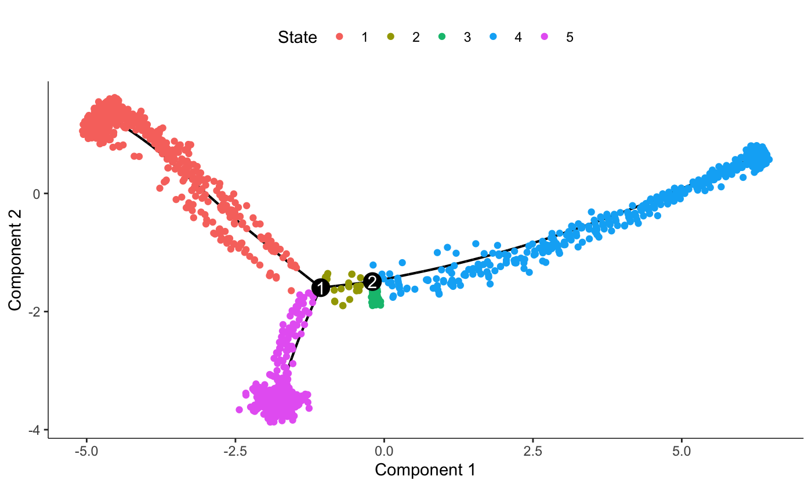

vignettes/Monocle.Rmd
Monocle.RmdtradeSeq is an R package that allows analysis of gene expression along trajectories. While it has been developed and applied to single-cell RNA-sequencing (scRNA-seq) data, its applicability extends beyond that, and also allows the analysis of, e.g., single-cell ATAC-seq data along trajectories or bulk RNA-seq time series datasets. For every gene in the dataset, tradeSeq fits a generalized additive model (GAM) by building on the mgcv R package. It then allows statistical inference on the GAM by assessing contrasts of the parameters of the fitted GAM model, aiding in interpreting complex datasets. All details about the tradeSeq model and statistical tests are described in our preprint (Van den Berge et al. 2020).
In this vignette, we analyze a subset of the data from (Paul et al. 2015). A SingleCellExperiment object of the data has been provided with the tradeSeq package and can be retrieved as shown below. The data and UMAP reduced dimensions were derived from following the Monocle 3 vignette.
The main vignette focuses on using tradeSeq downsteam of slingshot. Here, we present how to use tradeSeq downstream of monocle(Qiu et al. 2017).
We will fit developmental trajectories using the monocle package.
set.seed(200)
pd <- data.frame(cells = colnames(counts), cellType = celltype)
rownames(pd) <- pd$cells
fd <- data.frame(gene_short_name = rownames(counts))
rownames(fd) <- fd$gene_short_name
cds <- newCellDataSet(counts, phenoData = new("AnnotatedDataFrame", data = pd),
featureData = new("AnnotatedDataFrame", data = fd))
cds <- estimateSizeFactors(cds)
cds <- reduceDimension(cds, max_components = 2)
cds <- orderCells(cds)
cds <- orderCells(cds, root_state = 5)
plot_cell_trajectory(cds)
Only possible for DDRTree. There are two options to do this. Either use the extract_monocle_info function and fit using the default fitGAM mode.
info <- extract_monocle_info(cds)
sce <- fitGAM(counts = Biobase::exprs(cds),
cellWeights = info$cellWeights,
pseudotime = info$pseudotime)or use the specific CellDataSet method.
sce <- fitGAM(cds, verbose = TRUE)You can then analyse the sce object following the main vignette.
As of now (06/2020), monocle3(Cao et al. 2019), is still in its beta version. Therefore, we have no plan yet to include a S4 method for monocle3 while it is not on CRAN or Bioconductor and the format is still moving. However, we present below a way to use tradeSeq downstream of monocle3 as of version ‘0.2’, for a fully connected graph. We follow the tutorial from the monocle3 website.
You will need to install monocle3 from here before running the code below.
set.seed(22)
library(monocle3)
# Create a cell_data_set object
cds <- new_cell_data_set(counts, cell_metadata = pd,
gene_metadata = data.frame(gene_short_name = rownames(counts),
row.names = rownames(counts)))
# Run PCA then UMAP on the data
cds <- preprocess_cds(cds, method = "PCA")
cds <- reduce_dimension(cds, preprocess_method = "PCA",
reduction_method = "UMAP")
# First display, coloring by the cell types from Paul et al
plot_cells(cds, label_groups_by_cluster = FALSE, cell_size = 1,
color_cells_by = "cellType")
# Running the clustering method. This is necessary to the construct the graph
cds <- cluster_cells(cds, reduction_method = "UMAP")
# Visualize the clusters
plot_cells(cds, color_cells_by = "cluster", cell_size = 1)
# Construct the graph
# Note that, for the rest of the code to run, the graph should be fully connected
cds <- learn_graph(cds, use_partition = FALSE)
# We find all the cells that are close to the starting point
cell_ids <- colnames(cds)[pd$cellType == "Multipotent progenitors"]
closest_vertex <- cds@principal_graph_aux[["UMAP"]]$pr_graph_cell_proj_closest_vertex
closest_vertex <- as.matrix(closest_vertex[colnames(cds), ])
closest_vertex <- closest_vertex[cell_ids, ]
closest_vertex <- as.numeric(names(which.max(table(closest_vertex))))
mst <- principal_graph(cds)$UMAP
root_pr_nodes <- igraph::V(mst)$name[closest_vertex]
# We compute the trajectory
cds <- order_cells(cds, root_pr_nodes = root_pr_nodes)
plot_cells(cds, color_cells_by = "pseudotime")
library(magrittr)
# Get the closest vertice for every cell
y_to_cells <- principal_graph_aux(cds)$UMAP$pr_graph_cell_proj_closest_vertex %>%
as.data.frame()
y_to_cells$cells <- rownames(y_to_cells)
y_to_cells$Y <- y_to_cells$V1
# Get the root vertices
# It is the same node as above
root <- cds@principal_graph_aux$UMAP$root_pr_nodes
# Get the other endpoints
endpoints <- names(which(igraph::degree(mst) == 1))
endpoints <- endpoints[!endpoints %in% root]
# For each endpoint
cellWeights <- lapply(endpoints, function(endpoint) {
# We find the path between the endpoint and the root
path <- igraph::shortest_paths(mst, root, endpoint)$vpath[[1]]
path <- as.character(path)
# We find the cells that map along that path
df <- y_to_cells[y_to_cells$Y %in% path, ]
df <- data.frame(weights = as.numeric(colnames(cds) %in% df$cells))
colnames(df) <- endpoint
return(df)
}) %>% do.call(what = 'cbind', args = .) %>%
as.matrix()
rownames(cellWeights) <- colnames(cds)
pseudotime <- matrix(pseudotime(cds), ncol = ncol(cellWeights),
nrow = ncol(cds), byrow = FALSE)
sce <- fitGAM(counts = counts,
pseudotime = pseudotime,
cellWeights = cellWeights)Then, the sce object can be analyzed following the main vignette.
## R version 4.0.3 (2020-10-10)
## Platform: x86_64-pc-linux-gnu (64-bit)
## Running under: Ubuntu 20.04.1 LTS
##
## Matrix products: default
## BLAS/LAPACK: /usr/lib/x86_64-linux-gnu/openblas-pthread/libopenblasp-r0.3.8.so
##
## locale:
## [1] LC_CTYPE=en_US.UTF-8 LC_NUMERIC=C
## [3] LC_TIME=en_US.UTF-8 LC_COLLATE=en_US.UTF-8
## [5] LC_MONETARY=en_US.UTF-8 LC_MESSAGES=C
## [7] LC_PAPER=en_US.UTF-8 LC_NAME=C
## [9] LC_ADDRESS=C LC_TELEPHONE=C
## [11] LC_MEASUREMENT=en_US.UTF-8 LC_IDENTIFICATION=C
##
## attached base packages:
## [1] splines parallel stats4 stats graphics grDevices utils
## [8] datasets methods base
##
## other attached packages:
## [1] monocle_2.18.0 DDRTree_0.1.5
## [3] irlba_2.3.3 VGAM_1.1-5
## [5] ggplot2_3.3.3 Matrix_1.3-0
## [7] SingleCellExperiment_1.12.0 SummarizedExperiment_1.20.0
## [9] Biobase_2.50.0 GenomicRanges_1.42.0
## [11] GenomeInfoDb_1.26.2 IRanges_2.24.1
## [13] S4Vectors_0.28.1 BiocGenerics_0.36.0
## [15] MatrixGenerics_1.2.1 matrixStats_0.58.0
## [17] RColorBrewer_1.1-2 tradeSeq_1.5.10
## [19] knitr_1.31
##
## loaded via a namespace (and not attached):
## [1] nlme_3.1-151 bitops_1.0-6 fs_1.5.0
## [4] rprojroot_2.0.2 docopt_0.7.1 tools_4.0.3
## [7] utf8_1.1.4 R6_2.5.0 mgcv_1.8-33
## [10] colorspace_2.0-0 withr_2.3.0 tidyselect_1.1.0
## [13] gridExtra_2.3 compiler_4.0.3 textshaping_0.3.1
## [16] desc_1.2.0 DelayedArray_0.16.2 labeling_0.4.2
## [19] slam_0.1-48 scales_1.1.1 proxy_0.4-24
## [22] pbapply_1.4-3 slingshot_1.8.0 pkgdown_1.6.1
## [25] systemfonts_1.0.1 stringr_1.4.0 digest_0.6.27
## [28] rmarkdown_2.7 sparsesvd_0.2 XVector_0.30.0
## [31] pkgconfig_2.0.3 htmltools_0.5.0 highr_0.8
## [34] limma_3.46.0 rlang_0.4.10 FNN_1.1.3
## [37] farver_2.1.0 generics_0.1.0 combinat_0.0-8
## [40] BiocParallel_1.24.1 dplyr_1.0.4 RCurl_1.98-1.2
## [43] magrittr_2.0.1 GenomeInfoDbData_1.2.4 Rcpp_1.0.5
## [46] munsell_0.5.0 fansi_0.4.1 ape_5.4-1
## [49] viridis_0.5.1 lifecycle_0.2.0 edgeR_3.32.1
## [52] stringi_1.5.3 yaml_2.2.1 debugme_1.1.0
## [55] zlibbioc_1.36.0 Rtsne_0.15 plyr_1.8.6
## [58] grid_4.0.3 ggrepel_0.9.1 crayon_1.4.1
## [61] lattice_0.20-41 locfit_1.5-9.4 pillar_1.5.0
## [64] igraph_1.2.6 reshape2_1.4.4 glue_1.4.2
## [67] evaluate_0.14 vctrs_0.3.6 gtable_0.3.0
## [70] RANN_2.6.1 purrr_0.3.4 assertthat_0.2.1
## [73] xfun_0.19 princurve_2.1.6 viridisLite_0.3.0
## [76] ragg_1.1.1 HSMMSingleCell_1.10.0 qlcMatrix_0.9.7
## [79] tibble_3.1.0 pheatmap_1.0.12 memoise_1.1.0
## [82] cluster_2.1.0 fastICA_1.2-2 densityClust_0.3
## [85] ellipsis_0.3.1Cao, Junyue, Malte Spielmann, Xiaojie Qiu, Xingfan Huang, Daniel M. Ibrahim, Andrew J. Hill, Fan Zhang, et al. 2019. “The Dynamics and Regulators of Cell Fate Decisions Are Revealed by Pseudo-Temporal Ordering of Single Cells.” Nature.
Paul, Franziska, Ya’ara Arkin, Amir Giladi, Diego Adhemar Jaitin, Ephraim Kenigsberg, Hadas Keren-Shaul, Deborah Winter, et al. 2015. “Transcriptional Heterogeneity and Lineage Commitment in Myeloid Progenitors.” Cell 163 (7): 1663–77. https://doi.org/10.1016/J.CELL.2015.11.013.
Qiu, Xiaojie, Qi Mao, Ying Tang, Li Wang, Raghav Chawla, Hannah A Pliner, and Cole Trapnell. 2017. “Reversed graph embedding resolves complex single-cell trajectories.” Nature Methods 14 (10): 979–82. https://doi.org/10.1038/nmeth.4402.
Van den Berge, Koen, Hector Roux de Bézieux, Kelly Street, Wouter Saelens, Robrecht Cannoodt, Yvan Saeys, Sandrine Dudoit, and Lieven Clement. 2020. “Trajectory-based differential expression analysis for single-cell sequencing data.” Nature Communications 11 (1): 1201. https://doi.org/10.1038/s41467-020-14766-3.